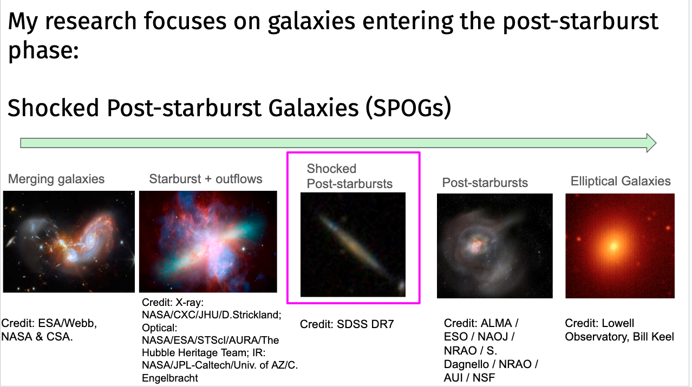
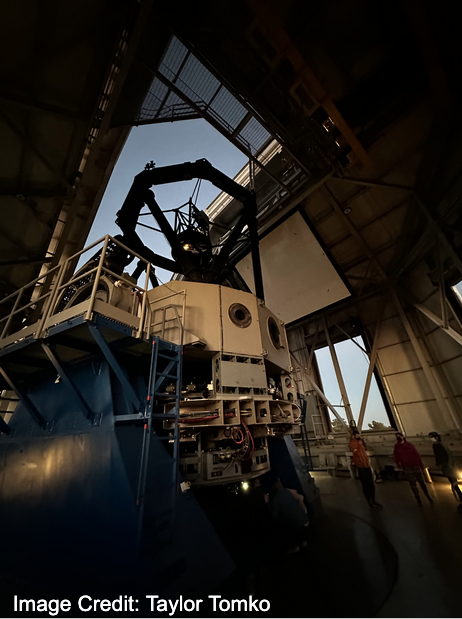
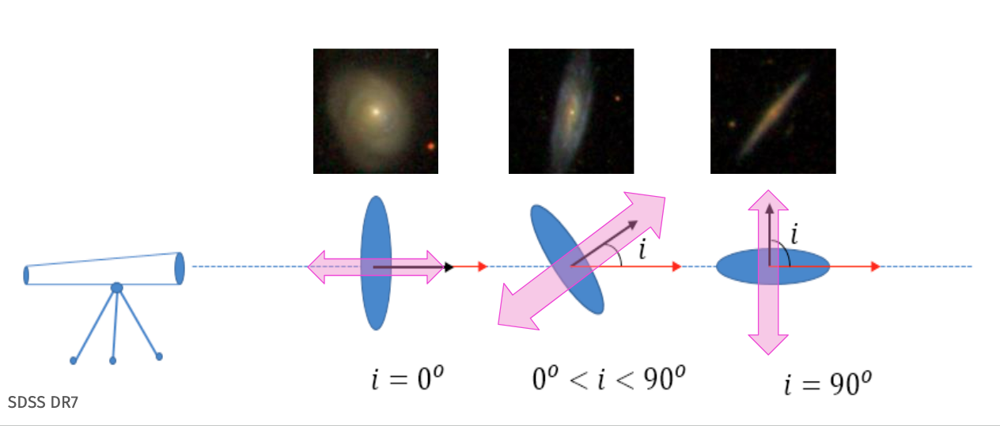
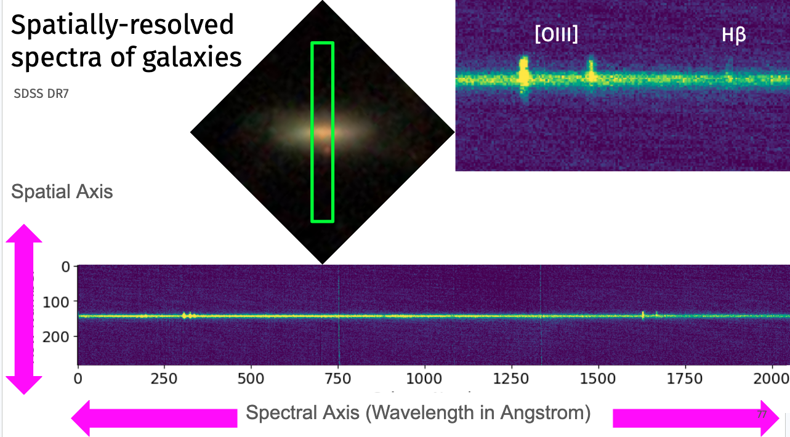

My research focuses on galaxy evolution, including shocked post-starburst galaxies (SPOGs), gas kinematics, and the physical processes driving transitions in galaxy populations.
When we look at galaxies, we notice that there are two main populations: blue spiral galaxies and red ellipticals. Over the past 6 Gyr, the mass of galaxies in the blue cloud has not changed while the mass of galaxies in the red ellipiticals had doubled. This suggests that over time, blue spirals evolve into red ellipticals. Galaxy evolution, in part, is trying to answer what mechanisms causes that change to occur.
In classic cases, to study physical mechanisms that might cause galaxies to evolve, post-starburst galaxies have been studied. These are galaxies that in last 1 Gyr had a large starburst event before star formation stopped. Some mechanism (or combination of mechanisms) must be keeping star formation from occurring either by heating the gas or removing it from the galaxy.
Unlike most post-starburst samples, Shocked POst-starburst Galaxies (SPOGs) select for galaxies that had a recent starburst but that also could have ongoing energetic mechanisms. These type of galaxies are selected out in older surveys, but might be key to tracing mechanisms causing quenching (star formation stoppping) at earlier time periods.

My research is to address three main questions related to the SPOGs sample of galaxies:

We present long-slit spectroscopy from the LDT for a sample of 77 shocked post-starburst galaxies to search for evidence of outflows. To do so, we look for extraplanar ionized gas along the minor axis of each target observed with a signal-to-noise greaterthan 3 out past the edges of the galactic continuum. Our conclusions are the following:

